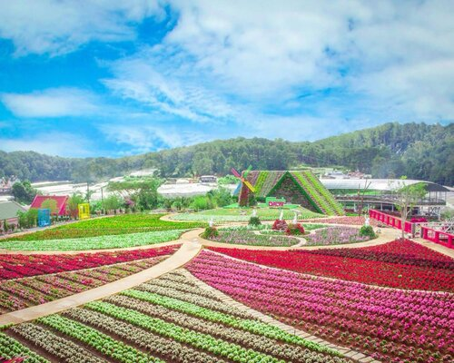

Vườn hoa Đà Lạt: Thiên đường hoa muôn sắc
Chào mừng các bạn đến với Đà Lạt - thành phố ngàn hoa của Việt Nam! Khám phá vẻ đẹp tuyệt vời và huyền bí của Vườn hoa Đà Lạt, một điểm đến không thể bỏ qua khi bạn đặt chân đến thành phố này. Đà Lạt, nằm giữa vùng núi Tây Nguyên, không chỉ nổi tiếng với khí hậu mát mẻ quanh năm mà còn là điểm đến lý tưởng cho những người yêu thích hoa cảnh. Vườn hoa Đà Lạt nằm giữa lòng thành phố, tạo nên một không gian xanh mát, tràn ngập sắc hoa rực rỡ.
Vườn hoa Đà Lạt có diện tích rộng lớn, với hàng loạt các loài hoa độc đáo và đẹp mắt. Bạn sẽ bị cuốn hút ngay từ lúc bước chân vào, khi mà mọi góc nhìn đều là một bức tranh sống động của thiên nhiên. Đây không chỉ là nơi để thỏa sức tận hưởng vẻ đẹp của hoa lá, mà còn là không gian tuyệt vời để quây quần, tận hưởng không khí trong lành. Mỗi góc của Vườn hoa Đà Lạt đều mang một câu chuyện riêng, từ những dải hoa màu sắc tinh tế, đến những đồi cỏ xanh ngắt. Bạn có thể dạo chơi giữa những hàng cây thơm ngát, hoặc ngồi thư giãn dưới bóng mát của những tán cây cổ thụ. Không chỉ là điểm đến cho du khách, Vườn hoa Đà Lạt còn là nơi lý tưởng cho những cặp đôi muốn tận hưởng không khí lãng mạn. Hoa lá khoe sắc, gió nhẹ ru, tất cả tạo nên một bức tranh tuyệt vời cho tình yêu thắm thiết. Với không gian thoáng đãng và bốn mùa xuân, Vườn hoa Đà Lạt là nguồn cảm hứng không ngừng cho những người yêu nghệ thuật và nhiếp ảnh gia. Mỗi góc nhìn đều là một tác phẩm nghệ thuật sống động, đưa người thưởng ngoạn vào thế giới mộng mơ của hoa lá. Hãy để mình lạc vào thế giới tuyệt vời này, nơi mà sắc hoa và hương thơm kết hợp tạo nên một trải nghiệm không thể quên. Vườn hoa Đà Lạt chắc chắn sẽ làm cho chuyến du lịch của bạn trở nên trọn vẹn và đặc biệt hơn bao giờ hết. Hãy để Vườn hoa Đà Lạt là điểm đến của bạn, nơi mà thiên nhiên và con người giao thoa, tạo nên một bức tranh tuyệt vời của đất đỏ Việt Nam.